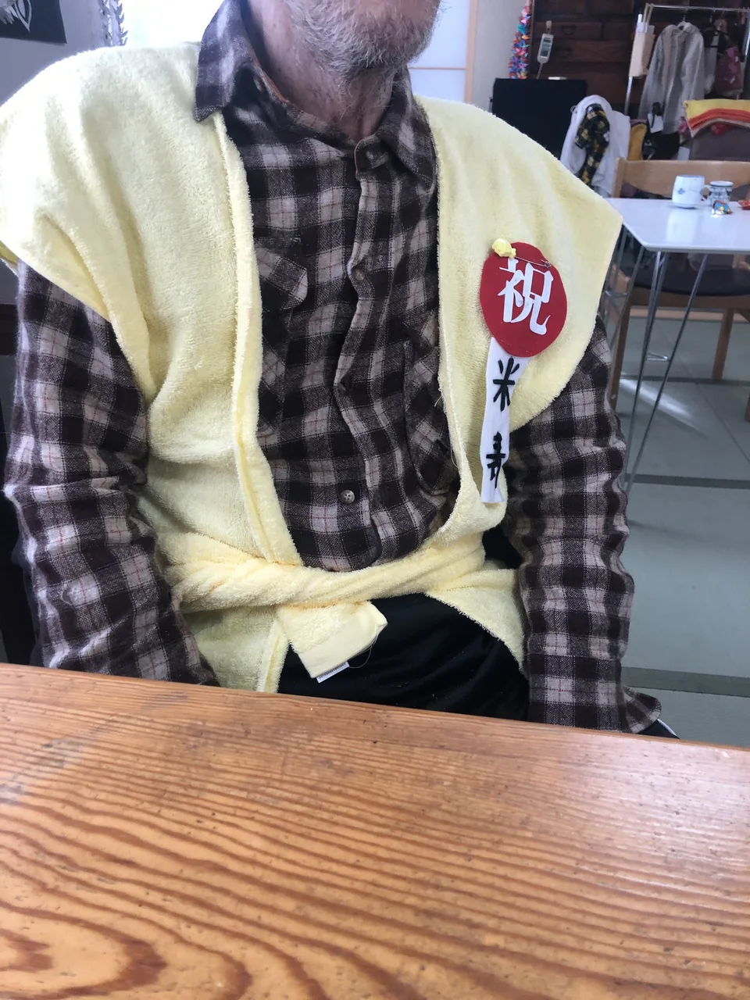

JOURNAL
スタッフブログ 11ページ
福泊の活動や日々のできごとを、スタッフがお届けします。

誕生日
記事を読む
2/2
記事を読む
なにができるかな
記事を読む
かぼちゃん
記事を読む
カフェって
記事を読む
1/17
記事を読むWARAKU福泊の日々
ありがとうございました
記事を読む
できること
記事を読むWARAKU福泊の日々
今日のこと
記事を読む条件に合う記事が見つかりませんでした。
すべての記事一覧へページ番号から探す
月別アーカイブ
2025年3月1件2024年2月2件2024年1月1件2023年12月2件2023年11月1件2023年10月1件2023年9月1件2023年8月2件2023年7月2件2023年6月1件2023年5月2件2023年3月1件2023年2月3件2023年1月4件2022年11月5件2022年10月4件2022年9月3件2022年7月8件2022年6月3件2022年5月5件2022年4月2件2022年3月4件2022年2月3件2022年1月6件2021年11月4件2021年10月5件2021年9月5件2021年7月1件2021年6月7件2021年5月1件2021年4月8件2021年2月6件2021年1月9件2020年12月1件2020年11月2件2020年10月16件2020年9月7件2020年8月2件2020年3月3件2019年12月1件2019年11月8件2019年10月10件2019年9月1件2019年8月12件2019年7月4件2019年6月2件2019年5月1件2019年4月2件2019年3月8件2016年8月1件2016年7月1件2016年1月1件2015年12月1件2015年11月2件2015年10月2件